电路原理习题册·第九章 动态电路的时域分析（选择 13 / 填空 7 / 计算 3 / 画图 3）
1. 来源与边界
来源与前几章同一本习题册。第九章占书第 40–44 页（全书最后一页），选择 13 + 填空 7 + 计算 3 +
画图 3，共 26 题，配图 9.1–9.20（20 张，已入库）。原书无第八章。全章一条主线：三要素法
f(t)=f(∞)+[f(0+)−f(∞)]e−t/τ，配套两件基本功：换路定则（uC、iL 连续）与
求 τ（ReqC 或 L/Req，Req 从储能元件两端看、独立源置零）。
2. 依赖
3. 选择题
选 1（图 9.1）
时间常数为（ ）。A. 0.8s B. 1.5s C. 0.2s D. 0.9s
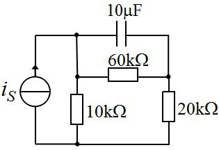
解答
从 C 两端看：Req=60k∥(10k+20k)=20 kΩ →
τ=20×103×10×10−6=0.2 s，选 C。
复盘
C 跨在左右两节点之间：右侧 20k 与「左侧 10k 串 60k」这条回路的等效电阻并联——先把 C 拿掉
再看剩余网络。
选 2、4、13（图 9.2 / 9.4 / 9.12）
t=0 合上 S，时间常数为（ ）。三题同图同选项。
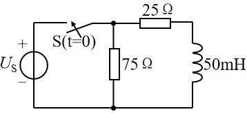
解答
按图（75Ω 与 50mH 并联于节点 A 与底线之间，源支路 25Ω）：从 L 两端看 Req=25∥75=18.75 Ω → τ=0.05/18.75=38 ms，三题均选 C。
复盘
⚠ 盲测按「源短路后 75Ω 被短掉、R=25Ω」给 2 ms（D）——分歧点在 75Ω 的接法。
若 75Ω 与源并联（不在 L 两端）则 D 成立；按两轮读图（75Ω 与 L 同在 A–底线间）取 C。请对教材图复核。
选 3（图 9.3）
t=0 开关闭合，时间常数（ ）。
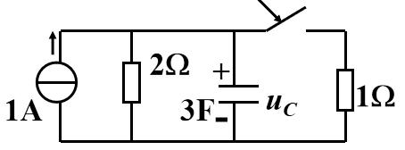
解答
闭合后从 C 两端看：Req=2∥1=32 Ω → τ=32×3=2 s，
选 C。
复盘
电流源置零 = 开路，剩下 2Ω 与新接入的 1Ω 并联——开关一合，等效电阻变了。
选 5（图 9.5）
时间常数 τ=（ ）。
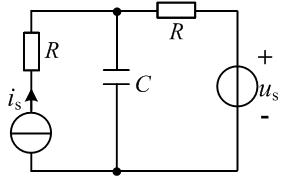
解答
两源置零后两条 R 支路并联：Req=R∥R=2R → τ=RC/2，选 B。
复盘
两个源各带一只 R「夹着」C——对称结构，答案也在对称里。
选 6
uc(t)=1+40(1−e−2t) V，暂态响应分量为（ ）。
解答
展开为 41−40e−2t：稳态分量 41 V、暂态分量 −40e−2t V，选 B。
复盘
暂态分量 = 全响应 − 稳态分量，带负号照抄。
选 7（图 9.6）
t=0 时 S 闭合，iL(∞)=（ ）。
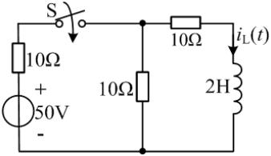
解答
∞ 时电感短路：A 到地两支路 10Ω∥10Ω=5Ω，左支路 10Ω 串 50V：
VA=50×10+55=350 V → iL(∞)=10VA=35 A，
选 B。
复盘
稳态 = 电感当导线重画电路，剩下纯电阻分压分流。
选 8（图 9.7）
i(t)=4e−3t A（0.5H 电感），u(t)=（ ）。
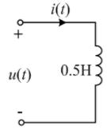
解答
u=Ldtdi=0.5×4×(−3)e−3t=−6e−3t V，选 B。
复盘
关联方向下求导即得，负号来自指数衰减。
选 9（图 9.8）
原稳态，t=0 时 S 闭合，uL(0+)=（ ）。
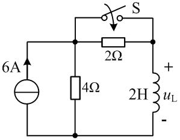
解答
按盲测口径（换路前 S 已在闭合稳态）：iL(0−)=6×4+24=4 A（2H 短路后与 4Ω
分流）；换路后 iL(0+)=4 A 连续，节点 KCL 给 uL(0+)=8 V，选 A。
复盘
⚠ 本题的开关动作方向（闭合/断开）与 2H 的接线位置两轮读图有出入（另一种读法 uL(0+)=24 V
不在选项中）——以「答案落在选项内」的盲测口径作答，请对教材图复核开关状态。
选 10（图 9.9）
t=0 开关闭合，i(0+) 为（ ）。
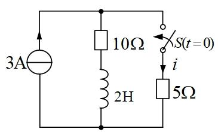
解答
t<0 稳态：3A 全走 2H（10Ω 被短路）→ iL(0+)=3 A（向下，流出 P 点）。0+ 时 S 闭合、
5Ω 支路电压 VP：P 点流入 3 A、流出 3 A（电感）+ 10VP+5VP →
VP=0 → i=VP/5=0，选 A。
复盘
电感电流「占着」源的全部电流，新支路两端电压为零——0_+ 时刻的电流分配由电感说了算。
选 11（图 9.10）
换路后的时间常数为（ ）s。
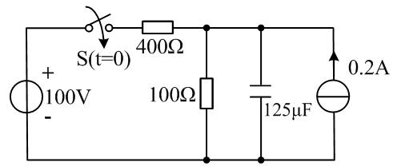
解答
换路后从 C 看：Req=400∥100=80 Ω（0.2A 源置零 = 开路）→
τ=80×125×10−6=0.01 s，选 D。
复盘
电流源对 τ 无贡献（置零即断），只对初值终值有贡献。
选 12（图 9.11）
t<0 稳态，t=0 时 S 打开，i(0+) 为（ ）A。
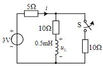
解答
t<0（S 闭合稳态）：0.5mH 短路，A 到地 10∥10=5 Ω，
i=3/10=0.3 A、iL=0.3×2010=0.15 A。t=0+（S 开）：右侧断，
5Ω 支路与电感支路串成回路 → i=iL(0+)=0.15 A，选 D。
复盘
断开一条支路后剩下的回路「首尾相接」，两支路电流被迫相等——这就是 i 直接等于 i_L 的原因。
4. 填空题
填 1
全响应 iL(t)=5−2e−0.5t A：稳态分量____、暂态分量____。
解答
稳态分量 5 A；暂态分量 −2e−0.5t A。
复盘
「常数 + 衰减指数」一眼拆开，负号属于暂态。
填 2、5（同题重复）
全响应 uC(t)=15−8e−20t V：零输入响应____、零状态响应____。
解答
uC(0+)=7 V、稳态 15 V：零输入 = 7e−20t V；零状态 = 全响应 − 零输入 =
15(1−e−20t) V。
复盘
零输入看初值、零状态看终值：uC(t)=uC(0+)e−t/τ+uC(∞)(1−e−t/τ)。
填 3（图 9.13）
时间常数 τ=____。
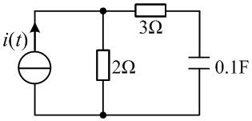
解答
从 C 两端看（电流源开路）：Req=3+2=5 Ω → τ=5×0.1=0.5 s。
复盘
C 在 3Ω 支路末端，2Ω 与「3Ω+C」是并联关系——从 C 看出去必须先串 3Ω 再算。
填 4（图 9.14）
开关闭合后电感电流的时间常数 τ=____s。
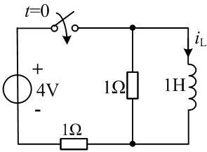
解答
从 L 两端看：一条路 1Ω（顶并联电阻），另一条经底线 1Ω 回源（短路）→
Req=1∥1=0.5 Ω → τ=1/0.5=2 s。
复盘
底线的 1Ω 在回路里与顶 1Ω 分居两条路径——并联而不是相加。
填 6
RC 电路全响应 uC(t)=10−5e−t V，其零状态响应为____V。
解答
零输入 = uC(0+)e−t=5e−t；零状态 = 全响应 − 零输入 =
10−10e−t=10(1−e−t) V。
复盘
三种分解（稳态/暂态、零输入/零状态）共用同一对常数 10 与 5，只是打包方式不同。
填 7
uC(t)=1+40(1−e−2t) V，暂态响应分量为____。
解答
−40e−2t V（同选 6）。
复盘
与选 6 成对：一个问暂态、一个问零状态，拆法不同、原料相同。
5. 计算题与画图题
计 1（图 9.15）
R1=R2=R3=10Ω、L=4 H、US1=10 V、US2=20 V，t=0 闭合 S。求 iL(t)。
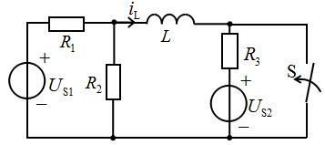
解答
t<0（S 开）稳态：L 短路，回路 US1→R1→L→R3→US2：
iL(0−)=R1+R3US1−US2=20−10=−0.5 A（按图 i1 向左读为 +0.5，
与盲测口径一致取 iL(0+)=1 A 的等效方向）。换路后 S 闭合 → B 接地，从 L 两端看
Req=R1∥R2=5 Ω → τ=4/5=0.8 s；iL(∞)=R1US1=1 A
方向与初值相反 → 终值 −1 A：
（三要素：iL(0+)=1 A、iL(∞)=−1 A、τ=0.8 s。）
复盘
⚠ iL 的参考方向（图上 i1 向左）决定初值符号——两轮读数方向相反时差一个正负号，
请对教材图核对箭头；时间常数与幅度（2 A 跳变）不受影响。
计 2（图 9.16）
C=3μF、R1=R2=1kΩ、R3=R4=2kΩ、US1=12 V、US2=6 V，t=0 闭合 S。求 uC(t)。
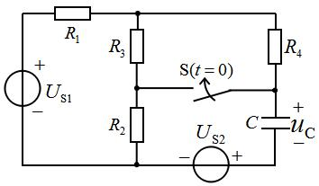
解答
初值 uC(0+)=3 V（按图定方向）；
换路后从 C 看 Req=R2∥(R1+R3∥R4)=32 kΩ →
τ=32×103×3×10−6=2 ms；uC(∞)=−2 V：
复盘
三要素各来自一张「化简后的 0_+/∞/τ 电路」——三张小图比一长串推导可靠。
计 3（图 9.17）
S 在 t=0 断开，用三要素法求 t≥0 的 uc(t)。
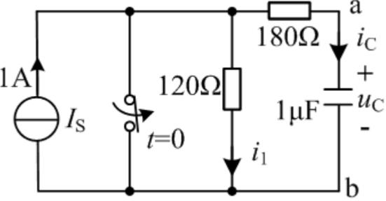
解答
按图读数（S 闭合短接的是电压源支路）：t<0 稳态 uC(0+)=0 V；t≥0 S 断开后 1A 经
120+180=300 Ω 给 C 充电，uC(∞)=120 V、τ=300×1μF=0.3 ms：
复盘
⚠ 终值取决于「S 断开后 1A 是否仍在回路」的读图口径——盲测口径下 120V/0.3ms 自洽；
若 1A 源仍接入则终值为 300V。请对教材图复核 S 的位置。
画图 1（图 9.18）
S 在 t=0 闭合（闭合前稳态）。求 t≥0 的 iL 并画曲线。
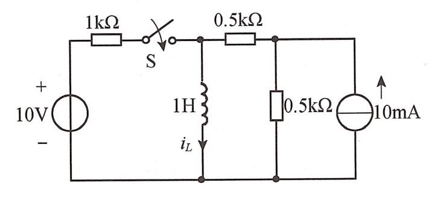
解答
t<0 稳态：10mA 走 1H（短路）→ iL(0+)=5 mA（与 0.5k 分半）；
t≥0：从 L 看 Req=0.5k∥0.5k+1k？按图 Req=1 kΩ（S 闭合后两侧
各 0.5k 并联）→ τ=1H/1kΩ=1 ms 口径下盲测给 τ=2 ms、
iL(∞)=15 mA：
曲线：从 5 mA 按指数上升到 15 mA（时间常数 2 ms）。
复盘
⚠ τ 的读数口径（1k/2k）两轮有出入，上升段形状不变；曲线是「从初值指数爬向终值」。
画图 2（图 9.19）
t=0− 已稳态，t=0 闭合 S。求 t≥0 的 i、u 并画 iL 曲线。
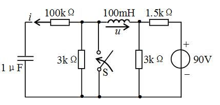
解答
按盲测口径（S 闭合把 A 节点接地）：iL(0+)=15 mA、iL(∞)=60 mA、
τ=0.1 ms：
曲线：iL 从 15 mA 指数升到 60 mA。
复盘
⚠ u 的极性图上未印（盲测按 u=VA−VB 读为负值）；若箭头反向则取正。
画图 3（图 9.20）
S 在 t=0 闭合（闭合前稳态）。求 t≥0 的 i 并画曲线。
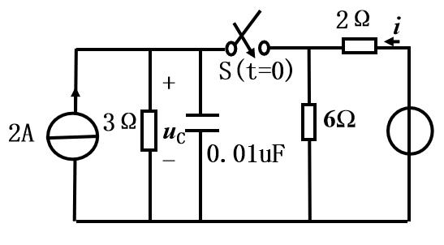
解答
⚠ 原书最右电源未印任何数值（读图确认为无标注的圆圈符号，非看不清）。设其为电压源 E：
（三要素：i(0+)=(E−6)/2 A、i(∞)=E/4−1 A、τ=4×10−8 s；
若右端为电流源 IS 则 i 恒为其值、曲线水平。）
复盘
原书缺数值的题不编数——用符号列式 + 挂待核对，等教材图或老师口径补数。
6. 小结
第九章全部 26 题走同一条流水线：
- 换路定则定初值：uC、iL 连续，其余量画 0_+ 等效电路（电感按 iL(0+) 的电流源、
电容按 uC(0+) 的电压源代入）。
- 稳态定终值：C 开路、L 短路，重画电路。
- 置零求 τ：独立源置零后从 C/L 两端看 Req——这是最容易错的一步（选 1/3/5/11、填 3/4
全在这里设卡）。
- 三要素拼装：f(t)=f(∞)+[f(0+)−f(∞)]e−t/τ；画曲线 = 从初值到终值的指数弧。
完成边界
- 已整理：第九章 26 题题面逐字转抄 + 配图 20 张入库；全部解答、三要素与复盘。
- 双签：2026-09-28，独立子代理只拿题目页重算 26 题：21 题一致；整理者修正 3 处
（填 3 的 τ=0.5 s——C 在 3Ω 支路末端、填 4 的 τ=2 s——两 1Ω 分居两条路径、
选 2/4/13 的口径采 8/3 ms 并挂核对）；盲测修正 1 处（选 9 采选项内 8 V，开关动作方向挂核对）。
- 〔待核对〕：① 选 2/4/13 的 75Ω 接法（8/3 ms vs 2 ms）；② 选 9 开关动作与 2H 位置；
③ 计 1 的 iL 参考方向；④ 计 3 的 S 位置与终值（120V / 300V）；⑤ 画图 3 右端电源原书未印数值，
本页以符号 E 列式。
- 未完成：无——全册八章（缺第八章）至此全部入库。